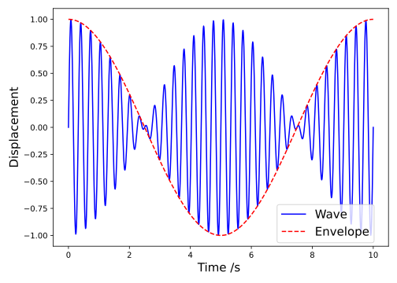

11 Superposition and Standing Waves
Textbook link: Tipler and Mosca, Section 15.1
11.1 Superposition of harmonic waves
In Section 7.1) we showed that the wave equation (Equation 7.3) is satisfied by any function in the form \(y = f(x \pm vt)\). We can go further than this, and specify general expressions which can satisfy the wave equation.
Specifically, if we have two functions, \(y_1\) and \(y_2\) (Equation 11.1), which satisfy the wave equation, then their sum (Equation 11.2), including scaling constants \(C_1\) and \(C_2\)) must also satisfy the wave equation.
\[ \begin{array}{rcl} y_1 &=& A_1 \sin\left[k_1(x \pm vt)\right] \\ y_2 &=& A_2 \sin\left[k_2(x \pm vt)\right] \\ \end{array} \tag{11.1}\]
\[ y_3 = C_1 y_1 + C_2 y_2 \tag{11.2}\]
Using double angle formulae we can demonstrate that \(y_3\) can also be written in the form \(y = f(x \pm vt)\), thus satisfying the wave equation.1 Therefore, the new wave \(y_3\) is a linear superposition of the original waves \(y_1\) and \(y_2\).
It is worth remembering that the wave equation was derived in the case of small amplitude disturbances; therefore if the vibration amplitudes become too large, the principle of superposition may fail. This can lead to some very interesting effects, including non-linear optics2
11.2 Two waves with same amplitude and frequency
Let’s now consider two waves with the same amplitude and frequency; but differing in phase (Equation 11.3):
\[ \begin{array}{rcl} y_1 &=& y_0 \sin (kx - \omega t) \\ y_2 &=& y_0 \sin (kx - \omega t +\delta ) \\ \end{array} \tag{11.3}\]
If the two waves are superimposed, for example if they are travelling through the same medium, the resultant wavefunction is just the sum of \(y_1\) and \(y_2\) (Equation 11.4):
\[ \begin{array}{rcl} y &=& y_1 + y_2 \\ &=& y_0 \sin (kx - \omega t) + y_0 \sin (kx - \omega t +\delta ) \end{array} \tag{11.4}\]
In many situations it is mathematically simpler to use the complex exponential notation to treat waves and oscillations. However, in the case of a linear addition of two waves, it is simpler to just use trigonometric identities.
Here we will use the identity:
\[ \sin\theta_{1}+\sin\theta_{2} = 2\sin\left(\frac{\theta_{1}+\theta_{2}}{2}\right)\cos\left(\frac{\theta_{1}-\theta_{2}}{2}\right) \]
… we obtain:
\[ y = 2y_{0}\sin\left(kx-\omega t + \frac{\delta}{2}\right)\cos\left(\frac{-\delta}{2}\right) \tag{11.5}\]
As an aside, we can do the same thing with complex notation; we can write our wave superposition as follows:
\[ y = y_{1} + y_{2} = y_{0}e^{i(kx - \omega t)} + y_{0}e^{i(kx - \omega t + \delta)} \]
Remembering that we are interested in the ‘imaginary’ component at the end since we started with \(y_1\) and \(y_2\) as sine waves, we can write this superposition as:
\[ y = y_0 e^{i(kx-\omega t)}\left( 1 + \mathrm{e}^{\mathrm{i}\delta} \right) \]
We can show using an Argand diagram (Figure 11.1) that the term \((1 + \mathrm{e}^{\mathrm{i}\delta})\) is equal to \(2\cos \left(\frac{\delta}{2}\right)e^{i\frac{\delta}{2}}\), and hence:
\[ y = 2y_0 \cos(\delta/2) e^{i(kx-\omega t + \delta/2)} \]
When we expand this expression using De Moivre’s theorem, we obtain the same result as in Equation 11.5:
\[ y = \underbrace{2 y_0 \cos \left( \frac{\delta}{2} \right)}_{\textsf{New amplitude}} \underbrace{\sin \left( kx - \omega t + \frac{\delta}{2} \right)}_{\textsf{Travelling wave}} \tag{11.6}\]
This tells us that the resulting wave has the same frequency as the component waves, but a different amplitude and phase. This new amplitude is given by the expression in Equation 11.7:
\[ A_{\textsf{new}} = 2 y_0 \cos \left( \frac{\delta}{2} \right) \tag{11.7}\]
There are three special cases to be aware of:
- If \(\delta = 0\), the waves are exactly in phase and the waves add together (constructive interference), with amplitude \(A = 2 y_0\);
- If \(\delta = \pi\), the waves are exactly out of phase and the waves subtract (destructive interference), and the amplitude \(A = 0\);
- If \(\delta = \frac{2\pi}{3}\), the resultant wave has exactly the same amplitude as the input waves.
All three of these cases can be derived by substituting the relevant value of \(\delta\) into Equation 11.7).
11.2.1 Phasors
The process we have shown above is a specific case of using phasors to determine an amplitude of a superposition of waves. The general method for determining the superposition of a number of waves of the same frequency - regardless of amplitude or relative phase - is shown as follows.
For a series of waves (Equation 11.8), each with its own amplitude \(A_n\) and relative phase \(\delta_n\), we can determine a superposition by summing them together.
\[ \begin{cases} y_1 = A_1 e^{i(kx - \omega t + \delta_1)} \\ y_2 = A_2 e^{i(kx - \omega t + \delta_2)} \\ y_3 = A_3 e^{i(kx - \omega t + \delta_3)} \\ \end{cases} \tag{11.8}\]
The summation is straightforward:
\[ \begin{array}{rcl} y_{\mathrm{total}} &=& y_1 + y_2 + y_3 \\ &=& A_1 e^{i(kx - \omega t + \delta_1)} + A_2 e^{i(kx - \omega t + \delta_2)} + A_3 e^{i(kx - \omega t + \delta_3)}\\ &=& \left(A_1 e^{i\delta_1} + A_2 e^{i\delta_2} + A_3 e^{i\delta_3} \right) e^{i(kx - \omega t)} \end{array} \tag{11.9}\]
By taking out a common factor of \(e^{i(kx - \omega t)}\) from the superposition, we have isolated the variable “wave component” (\(e^{i(kx - \omega t)}\)) from the invariant (constant) component, (\(\left(A_1 e^{i\delta_1} + A_2 e^{i\delta_2} + A_3 e^{i\delta_3} \right)\)). This ‘invariant’ component is the amplitude of the new superposition, and thus we have expressed our superposition as the original wave - with a ‘zero phase’ offset - and an amplitude.
As the new amplitude is a sum of complex numbers, we can visualise these on an Argand diagram (Figure 11.2)

This method will work for any values of \(\delta\) and any amplitudes \(A\), provided the frequency \(\omega\) and wavenumber \(k\) of the superposed waves is constant.
11.3 Two waves, same amplitude, different frequency (Beats)
Let’s consider two waves with the same amplitude but differing in frequency (i.e. amplitude \(y_0\) is common to both, each has independent frequency \(\omega_1\) and \(\omega 2\)). For convenience we will assume that the phase difference between the two is zero at time \(t=0\), and we will then consider their displacements at an arbitrary \(x\) coordinate (e.g. \(x=0\)).
Firstly, let’s lay out the mathematical description of each wave:
\[ y_{1} = y_{0} \sin \omega_{1} t \quad \textsf{and} \quad y_{2} = y_{0} \sin \omega_{2} t \tag{11.10}\]
We can now obtain an expression for the overall observed amplitude, \(y = y_1 + y_2\), and use the standard trigonometric identities3 to combine the two equations:
\[ \begin{array}{rcl} y &=& y_1 + y_2 \\ &=& y_{0} \sin \omega_{1} t + y_{0} \sin \omega_{2} t \\ &=& 2y_{0}\cos\left(\dfrac{\omega_{1}-\omega_{2}}{2}t\right)\sin\left(\dfrac{\omega_{1}+\omega_{2}}{2}t\right) \end{array} \tag{11.11}\]
As an aside, we can achieve the same result by using complex exponentials where the sum of the two waves is given in Equation 11.10, where we are interested in the imaginary component since we started with sine waves:
\[ y = y_0 \mathrm{e}^{\mathrm{i}\omega_1 t} + y_0\mathrm{e}^{\mathrm{i}\omega_2 t} \tag{11.12}\]
These can be added on an Argand diagram to show the result in Equation 11.13:
\[ y = y_0 r\mathrm{e}^{\mathrm{i}\theta} \tag{11.13}\]
…where:
\[ r = 2 \cos\left(\frac{\omega_1t - \omega_2t}{2}\right) \quad \textsf{and} \quad \theta = \frac{\omega_1 t + \omega_2 t}{2} \]
Our end result if we expand this complex representation is:
\[ y = 2 y_0 \cos \left( \frac{\omega_1t - \omega_2t}{2} \right) \mathrm{e}^{\mathrm{i}\left(\frac{\omega_1 t + \omega_2t}{2} \right)} \]
As we said above, we are interested in the ‘imaginary’ (sine) component, and we end up with the same result as shown in Equation 11.11. We can simplify the expression as in Equation 11.14.
\[ y = \underbrace{ 2y_{0} \cos \left( \frac{\Delta \omega}{2}t \right)}_{\textsf{slowly varying amplitude}} \underbrace{ \sin \omega_{av}t}_{\textsf{wave with average frequency}} \tag{11.14}\]
…where \(\Delta \omega = \omega_1 - \omega_2\).
The frequency fo the resulting wave is the average of the two input waves, while the amplitude oscillates with frequency \(\frac{\Delta \omega}{2}\). This is known as beating. The actual frequency of the beats themselves is twice this, as shown in Figure 11.3.

Therefore, if the frequency of the slowly varying amplitude is \(\frac{\Delta \omega}{2}\), the observed frequency of the ‘beats’ will be twice this; i.e. the difference in frequency between the two sources.
Repeating the analysis above but with the full expressions for the two sine waves (i.e. \(y_n = y_0 \sin(kx - \omega t)\)), we obtain the expression in Equation 11.15:
\[ y= 2 y_{0} \cos \left (\frac{\Delta kx - \Delta\omega t}{2}\right) \cdot \sin(k_\textsf{av}x - \omega_\textsf{av}t ) \tag{11.15}\]
From Equation 11.15 we find there are two velocities to consider; the phase velocity of the “average” wave, and the phase velocity of the “envelope” (the waveform which describes the amplitude; see Figure 11.3). These are laid out below:
The phase velocity of the “average” wave:
\[ v_{av} = \frac{\omega_{av}}{k_{av}} \]
The phase velocity of the envelope:
\[ v_{env} = \frac{\Delta\omega}{\Delta k} \]
In a non-dispersive medium (i.e. all frequencies travel with the same phase velocity), it can be shown that \(v_{\textsf{av}} = v_{\textsf{env}} = \frac{\omega_1}{k_1} = \frac{\omega_2}{k_2} =\) the phase velocity of the medium.
However, in a dispersive medium, the velocities are not equal, i.e. \(v_{av} \neq v_{env}\), and the “envelope” propagates at a different speed to the individual components. We associate \(v_{env}\) with the group velocity \(v_g\) and in this case would be represented as:
\[ v_{g} = \frac{\Delta\omega}{\Delta k} \]
11.4 Standing waves
A standing wave is a specific outcome which occurs when a wave is confined to space (for example on a piano string) and it reflects at the boundaries and travels back along its original path. This leads to waves travelling in both directions which combine by superposition. Only certain frequencies can exist in a standing wave, as the superposition leads to a stationary pattern called a standing wave.
11.5 Wave function for a standing wave
In order to fully consider a standing wave, we need to derive the form of its wavefunction. To do this, we consider two waves travelling in opposite directions along a string (Equation 11.16). Because one is a reflection of the other (they each reflect from the boundaries), they will have the same frequency and phase.
\[ \begin{array}{rcl} y_1 &=& y_0 \sin (kx - \omega t) \\ y_2 &=& y_0 \sin (kx + \omega t) \\ \end{array} \tag{11.16}\]
The resultant vertical displacement of the string is then the sum of these two waves (Equation 11.17):
\[ \begin{array}{rcl} y &=& y_1 + y_2 \\ y &=& y_0 \sin (kx - \omega t) + y_0 \sin (kx + \omega t) \\ \end{array} \tag{11.17}\]
We can add these directly using a trigonometric identify or we can work in the complex notation:
\[ \begin{array}{rcl} y &=& y_0 \sin (kx - \omega t) + y_0 \sin (kx + \omega t) \\ &=& y_0 \mathrm{e}^{\mathrm{i}(kx - \omega t)} + y_0 \mathrm{e}^{\mathrm{i}(kx + \omega t)} \\ &=& y_0 \mathrm{e}^{\mathrm{i}kx} \left( \mathrm{e}^{-\mathrm{i}\omega t} + \mathrm{e}^{\mathrm{i}\omega t} \right) \end{array} \tag{11.18}\]
We can use either an Argand diagram or De Moivre’s theorem to show that the term \(\left( \mathrm{e}^{-\mathrm{i}\omega t}+ \mathrm{e}^{\mathrm{i}\omega t} \right) = 2 \cos \omega t\), and hence:
\[ y = 2 y_0 \cos \omega t \mathrm{e}^{\mathrm{i}kx} \]
We can now expand the complex exponent using De Moivre’s theorem again and, remembering we are interested in the ‘imaginary’ component (as this contains the desired sine function), and we obtain the result in Equation 11.19:
\[ y = \underbrace{2 y_0 \cos \omega t}_{\textsf{time-dependent amplitude}} \underbrace{\sin kx}_{\textsf{static wave}} \tag{11.19}\]
This result describes a static wave, \(y = \sin kx\) whose amplitude varies in time as \(A = 2 y_0 \cos \omega t\). Note that it is possible to obtain this result via a trigonometric identity also.
This standing wave is illustrated in Figure 11.4; but we notice that there are boundary conditions enforced; namely that the ends of the string are fixed at a constant, zero displacement; i.e.:
- \(y = 0\) at \(x = 0\), and:
- \(y = 0\) at \(x = L\) at all times \(t\)
…where \(L\) is the length of the string. From this we deduce that \(\sin kL = 0\) and therefore there are a family of solutions for \(k\) and \(\lambda\), known as harmonics.
- If \(\sin kL = 0\), then \(kL = 0, \pi, 2\pi, \dots\), or \(k_n L = n\pi\)
- Additionally, \(\lambda_n = \frac{2\pi}{k_n} = \frac{2L}{n}\) where \(n = 1, 2, 3, \dots\)
In other words, the vibrational modes are quantised due to the boundary conditions.
11.6 Waves on strings fixed at both ends
We have described the mathematics of standing waves; let’s now apply this to a wave travelling on a string which is fixed at both ends. Figure 11.5 illustrates the fundamental wavelength of the string, which corresponds to twice the length of the string.
We can then visualise the harmonics within the standing wave on this fixed string in Figure 11.6:
The modes of vibration (resonances) shown in Figure 11.6 illustrate the occurrence of nodes (points which do not move) and antinodes (points with the maximum vibration amplitudes). Note also that the end-points of the string must be nodes as well, as these points are fixed.
In general, the \(n\)th harmonic will have \(\frac{1}{n} \times\) wavelength and \(n \times\) the frequency of the fundamental vibration shown in Figure 11.5.
| Harmonic | \(\lambda\) | \(f\) |
|---|---|---|
| Fundamental, first | \(2L\) | \(f_1\) |
| Second | \(L\) | \(2f_1\) |
| Third | \(\frac{2L}{3}\) | \(3f_1\) |
| Fourth | \(\frac{L}{2}\) | \(4f_1\) |
| Fifth | \(\frac{2L}{5}\) | \(5f_1\) |
| \(n\)th | \(\frac{2L}{n}\) | \(nf_1\) |
In general, for the \(n\)th harmonic:
- Wavelength is given by \(\lambda_n = \frac{2L}{n}\)
- Frequency is given by \(f = nf_1 = \frac{nv}{\lambda_1} = \frac{nv}{2L}\)
…where \(v\) is the phase velocity (the speed of propagation of the wave along the string).
The resonant frequencies, or harmonics, of the string are known as its natural frequencies. Any string will resonate with maximum amplitude when excited with these frequencies, and this set of harmonics are known as a harmonic series. The actual harmonics heard when the string is excited will depend on the manner of its excitation; e.g. a string plucked at its centre will only display the odd harmonics; i.e. those with an anti-node in the centre.
In stringed instruments (violin, piano, guitar etc.) the vibration of the string is amplified by a mechanical resonator; a soundboard in the case of the piano, or resonant cavities for a guitar or violin. These resonators must be carefully designed to resonate equally well over a wide range of frequencies.
11.7 Organ pipes and other wind instruments
In contrast to a vibrating string, wind instruments rely on a resonance within a column of air. We can model these pipes as a simple pipe, resonating at its natural frequencies when air is blown into (or across) an opening at one end. The resonant behaviour will differ depending on whether the other end of the pipe is open or closed. We will consider each of these cases in turn.
11.7.1 Pipes open at both ends
In this model, the column of air is able to vibrate at its ends, so we have a similar set of harmonics as for a string, but with displacement antinodes at its ends (the air can vibrate freely at the ends of the tube). There is a second set of nodes/antinodes corresponding to the pressure; these do not align with the displacement nodes/antinodes; rather a pressure node aligns with a displacement antinode and vice versa. (if an air molecule does not move, we have a displacement node, but it is continuously ‘squashed’ from both sides by the oscillating air molecules, so experiences the biggest pressure change).
We observe all harmonics in this system; there are no concerns about ‘position of plucking’ that there is for the string. The displacement of the air molecules extends a little beyond the ends of the tube, so the effective length is given by \(L_\textsf{eff} = L + \Delta L\), where \(\Delta L\) is a small end correction. Therefore:
\[ \lambda_n = \frac{2L_\textsf{eff}}{n} \quad \textsf{and} \quad f_n = \frac{nv}{2L_\textsf{eff}} \]
11.7.2 Pipe closed at one end
We now have a different situation with different boundary conditions:
- There must be a displacement node at the closed end
- There must be a displacement antinode at the open end
This now gives us a fundamental wavelength four times longer than the effective length of the tube (the shortest node-antinode separation is a quarter wavelength).
This means that we only observe the odd harmonics (the even harmonics would not allow the boundary conditions for this tube).
\[ \lambda_n = \frac{4 L_\textsf{eff}}{n} \quad n = 1,3,5,\dots \]
\[ f_n = \frac{nv}{4 L_\textsf{eff}} \quad n = 1,3,5,\dots \]
When including scaling factors, this can become less than trivial, but can still be done.↩︎
Related to the non-linear response of the electromagnetic interactions with the medium, rather than light travelling in straight lines!↩︎
Here we use the sum-to-product identity \(\sin A + \sin B = 2\cos \left(\frac{A-B}{2}\right) \sin\left(\frac{A+B}{2}\right)\)↩︎